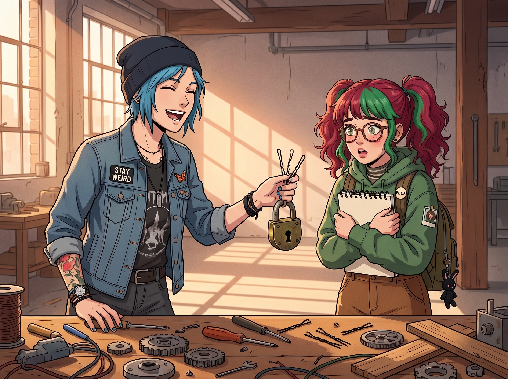

黑魔法教學（倒敘）

自從「雷雨夜護犢子」事件後，Chloe 和 Victoria 深刻意識到，如果不想被 Max 的死亡凝視和 Kate 的溫柔制裁雙重絞殺，她們必須學會對這位名叫 Lily 的膽小實習生「好一點」。
但這兩個社交障礙晚期患者表達善意的方式，就是向這隻無害的白兔傳授她們引以為傲的「核心生存技能」。
於是，在某個 Max 和 Kate 去超市採購的下午，工坊裡上演了一場極其荒謬的「黑化教學」。
一、藍領猛獸的廢土生存學：開鎖與熱線短接
Chloe 把 Lily 叫到工作台前，神神秘秘地遞給她兩根被彎折過的黑色髮夾，以及一個沉重的黃銅掛鎖。
「聽著，小傢伙，」Chloe 靠在吧台上，語氣像個傳授絕世武功的黑幫老大，「這世界充滿了把妳關在門外的混蛋。當妳被鎖在某個沒有信號的地下室，或者妳極度需要一罐櫻桃可樂但販賣機吃錢的時候，眼淚是沒用的。妳需要的是物理破壞力。」
Lily 拿著髮夾，手抖得像得了帕金森氏症：「Chloe 學姐……這、這是不是犯法的？」
「在資本主義的暴政下，這叫『資源再分配』。」Chloe 握住 Lily 的手，開始手把手教學，「把這根短的插進鎖芯底部作為扭力扳手，然後用這根長的去撥動裡面的彈子。聽聲音，找那個『咔噠』的阻尼感。學會這個，以後如果大富婆敢把妳鎖在畫廊外，妳就能進去把她的愛馬仕包全塗成螢光綠。」
Lily 震驚地瞪大眼睛，但出於對學姐的絕對服從，她居然真的開始認真感受鎖芯裡的彈子，甚至在速寫本上畫下了「彈子鎖機械結構透視圖」。
二、資本女王的精神絞殺術：用眼神摧毀甲方
就在 Lily 剛聽到第一聲「咔噠」時，一隻戴著百萬鑽戒的手伸過來，無情地將黃銅掛鎖掃到了地上。
「Price，妳在教她什麼底層犯罪技巧？如果她因為偷販賣機被抓，我的畫廊會跟著上社會新聞的！」
Victoria 穿著高定套裝，用一種看著垃圾的眼神看著地上的髮夾。隨後，她轉向 Lily，雙手環胸，語氣傲慢卻帶著一種「傳授商業機密」的施捨感：
「Lily，放下那些藍領的破銅爛鐵，看著我的眼睛。物理破壞太低級了，真正的毀滅，是摧毀對方的靈魂和階級自信。」
Victoria 微微揚起下巴，示範了一個堪稱教科書級別的名媛冷笑：「這招叫『Chase 斷頭台』。當妳以後遇到那種自以為是、對妳的排版指手畫腳的男性甲方時，妳不要反駁他。妳只需要看一眼他的髮際線，再看一眼他那雙廉價的拼接皮鞋，然後輕輕嘆一口氣，用最溫柔的語氣說：『我理解，畢竟不是每個人的原生家庭，都具備培養高級審美的經濟條件。』」
Lily 倒抽了一口涼氣，被這句話的毒性震驚得頭皮發麻：「Victoria 學姐……這樣對方會哭出來的吧？」
「哭出來就對了！」Victoria 敲了敲 Lily 的速寫本，「快點，把我剛才挑眉的角度畫下來。眉毛要抬高十五度，眼神要像看著一隻智力低下的草履蟲。來，對著我練習一次！」
三、家長回歸：物理與精神的雙重審判
二十分鐘後，提著兩大袋蔬菜和底片的 Max 和 Kate 推開了車廂的大門。
她們眼前的景象是：那個曾經連說話都不敢大聲的社恐實習生，此刻正半瞇著眼睛，用一種極度欠揍的傲慢神情，一邊冷笑著說「畢竟你的審美停留在哺乳動物早期」，一邊極其熟練地用兩根髮夾「咔噠」一聲撬開了工作台的抽屜。
「……」
Max 手裡的底片盒差點掉在地上。她推了推滑落的黑框眼鏡，轉頭看向身邊的 Kate，發出了靈魂拷問：「我們才離開了四十分鐘，為什麼我們的實習生變成了一個會開鎖的法國刻薄女小偷？」
Kate 臉上的溫柔笑容在瞬間固化，周圍的空氣溫度彷彿驟降了十度。
她放下購物袋，慢條斯理地走到工作台前。Chloe 和 Victoria 看到 Kate 的表情，瞬間像被施了定身咒一樣僵在原地。
「Chloe，Victoria。」Kate 的聲音輕柔得像一陣春風，卻帶著致命的殺傷力，「能向我解釋一下，為什麼妳們在教一個十九歲的大學生重罪技巧和精神霸凌嗎？」
「這、這是生存技能防禦演練！」Chloe 結結巴巴地往後退了一步，試圖把髮夾藏起來。
「這叫建立職場邊界感！是高階商業禮儀！」Victoria 死鴨子嘴硬地揚起下巴。
「是嗎？」
Max 嘆了口氣，走上前，一把沒收了 Lily 手裡的髮夾，順便揉了揉實習生因為心虛而低下的腦袋：「Lily，去溫室幫我把那幾盆多肉植物澆點水。把妳大腦裡剛才學到的垃圾全部清空。」
看著 Lily 如獲大赦般逃跑，Max 轉過身，用「時空領主」的死魚眼看著眼前這兩個成事不足敗事有餘的傢伙。
「Price，交出妳藏在駕駛座底下的所有萬能鑰匙。Chase，妳這個月不准再用『草履蟲』這個詞罵人。否則……」Max 停頓了一下。
Kate 溫柔地接上了後半句：「否則，接下來一個月，工坊裡的晚餐只有無鹽水煮綠花椰菜，以及不加糖的純燕麥糊哦。」
四、荒謬的後遺症
雖然這場「黑化教學」被及時叫停，但那兩顆奇怪的種子已經在實習生心裡生根發芽了。
幾天後，一個態度極其囂張的快遞員把包裹重重地砸在工坊門口，並對著 Lily 抱怨這裡太難找。
原本應該唯唯諾諾道歉的 Lily，突然深吸了一口氣。她微微揚起下巴，目光掃過快遞員那雙沾滿泥巴的鞋，然後用一種刻意放慢的語氣說：「我理解，畢竟不是每個人都有足夠的空間感知能力來閱讀地圖。需要我幫你把導航軟體升級到最新版嗎？」
在快遞員錯愕的目光中，Lily 轉身走進車廂，順手從口袋裡掏出一根髮夾，「咔噠」一聲，以一種極其瀟灑的姿態，把快遞員鎖在了車廂外的鐵柵欄外。
坐在車廂裡目睹了全程的四個人集體陷入了沉默。
「……看吧。」Chloe 滿臉驕傲地嚼著薯片，撞了撞旁邊同樣一臉暗爽的 Victoria，「我就說我們的教育理念是領先於時代的。」
而 Max 則絕望地捂住了臉：「完了，阿卡迪亞灣的詛咒已經蔓延到波特蘭的大學生身上了。」
故事的時間點，實際發生在第二季波特蘭工坊時期